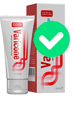

Dobrý den. Dnes chci mluvit o křečových žílách. Vzhledem k tomu, že ke mně přicházejí ženy s prosbou o pomoc ututlat křečové žily na nohou. Velice mě zaujal téma varikozity a rozhodla jsem se získat maximum informací o tomto problému. Nejvíce jsem byla ohromena rozsahem. Nedávné studie na Edinburské univerzitě ukázaly, že více než 67% žen v zemích EU trpí křečovými žilami.
Když jsem se o tomto zhodnocení dozvěděla, byla jsem šokována! Více než polovina žen v Evropě - to vypadá jako skutečná epidemie.
Kdo je více náchylný k varikozitě?
Křečové žíly se většinou vyskytují u žen. Nedávno však onemocnění začalo postihovat i muže. Data se nevztahují mužů - sportovců, kteří jsou náchylní k varikozitě. Kolik mužů trpí křečovými žilami? Kolem 24%!
- Odborník - kosmetolog Marie Novotná
Mezi nejkritičtějšími faktory výskytu křečových žil nazývají "sedavou" práci, nadváhu a málo aktivní životní styl.
Symptomy varikozity
Nejlepší strategie - včas rozpoznat a začít jednat. Rozhodla jsem se, že provedu studii o nejrozšířenějších a nejčastějších symptomech křečových žil. Mluvila jsem s několika flebology a spustila jsem dotazník.
Nejčastějšími příznaky, které nezahrnovaly vnější projevy, byly:
- - brnění
- - znecitlivění nohou
- - pulsující nebo pálící bolest v končetinách
- - Svalové křeče
Osobní zkušenost
Velmi často ženy věnují pozornost zdraví nohou pouze tehdy, když žíly na nohou jsou již v špatném stavu. Takové symptomy, jako jsou křeče a znecitlivění nohou, ony považují za únavu po náročném dni.
Další velký problém - ženy nerozumí zcela závažnost situace. Pokud se na nohách objeví žilní síť, oblékají kalhoty. Pomocí takového triku skrývají tuto "kosmetickou" vadu a zapomínají na závažné následky křečových žil.
Varikozita není jen ošklivé žíly, modré zóny a síť na nohou. Zavírat oči na ten problém není možné. Pokud zanedbat křečové žíly, bude to velmi bolestivé nejen pro nohy, ale také pro celý organismus. Může to skončit trombózou.
Nový prostředek proti varikozitě
Měla jsem potěšení mluvit se ženou, která vyplnila můj dotazník o příznacích křečových žil. Řekla, že se zúčastnila testování nového prostředku proti varikozitě .
Krém byl velmi účinný. Bolesti a křeče nohou zmizely, a už na konci testování otoky žil taky byly pryč. Zmizely, vnější i vnitřní projevy křečových žil.
Podepsala dohodu o mlčenlivosti a byla schopna vypravit příběh pouze za dva měsíce po ukončení testování.
Nový prostředek se ukázal jako účinnější než mnoho známých značek.
| Výzkum Edinburské univerzity: |

Venoruton |

|
| Současný účinek | Zmírňuje bolest | Snižuje bolest a otoky |
| Vedlejší účinky | Podráždění, alergie, svědění | Žádné vedlejší účinky |
| Kontraindikace | Přecitlivělost na složky preparátu | Žádné kontraindikace |
| Způsob působení | Odstraňuje podráždění | Tonizuje a čistí stěny cév |
| Dlouhodobý účinek | proti otokům a výborný anestetikum | Zlepšuje krevní oběh |
Krém působí totálně, a nejenom eliminuje bolest, jako většina konkurentů. Přispívá k odstranění příčiny křečových žil.
Pomohl více než jedné tisíce žen po celé Evropě. Krém se stal vynikající alternativou drahých chirurgických zákroků.
Na závěr chci uvést, že není třeba odkládat, jestli vidíte alespoň jeden z symptomů z tohoto seznamů. Varikozita je vážným problémem.
Michaela Honová
Posted 8 hours ago
Má sestra měla stejný problém. Když se objevila žilní síť, rozhodla, že ji zamaskuje a ne, jak jsem jí řekla, aby vyléčila. A když začaly otoky a nohy začaly bolet, začala myslet. Měla na sobě speciální punčochy, vyzkoušela si nějaké masti. A pomohl jí právě . Teď běhá, jako v mladosti! Nohy má zdravé a krásné! Žádné projevy varixů! Nohy, jako u modelky!
Věra Mazáková
Posted 9 hours ago
Napište, prosím, jak dlouho ona používala ? Mám strašnou varikozitu nohou. Koupila jsem speciální tablety na žíly a antivarikózní gel. Piji a aplikuji již týden a zatím jsem nevšimla, že to pomáhá, žíly na nohou jsou stálé modré. Nohy bolí méně a otoky, zdá se, vypadají menší, ale nemohu říci, že všechno zmizelo - tak tomu není. Nemám dost peněz na operaci. A ještě, na kterém stadiu varikozity lze mazat? Symptomy, které jsem všimla, jsou: brnění, otoky, křeče a otoky žil. Děkuji za odpověď.
Posted 9 hours ago
Dobrý den, Věro! Sestra pověděla, že krém velmi rychle odstraňuje bolest. Odstraňuje postupně otoky, hlavním úkolem je neustále ho užívat. O stadiu, kdy můžete používat krém, nevíme. Přečtěte o tom na webových stránkách, tady je link. My taky tady objednávaly . Neváhejte, krém je velmi dobrý. Velmi ho doporučuji. Dokonce i bez tablet pro žíly by vám měl pomoci.
Jitka Medková
Posted 10 hours ago
Ano! velmi dobrý krém! Nedávno jsem taky nevěděla, jak se vypořádat s křečovými žilami. Strašně bolely nohy a žíly byly ošklivé. Myslela jsem, že už půjdu do flebologa, dělat operace. A můj manžel našel někde tento krém a nabídl nejdřív ho zkusit. Co jsem mohla ztratit? Nic. Všechno dopadlo bez operací! Krém pomohl! Vůbec jsem nevěřil ze začátku. Bála jsem se, že zase žíly opuchnou a nohy budou bolet. Ale ani náhodou! Všechno dobře!